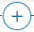

How do I add a new block and component?
Page is made of multiple blocks. You can add new blocks or customize the available blocks as per your requirements.
This use case starts when you want to add a block and ends when you have added it.
In this example, you add a new heading component to the Home page of the theme Theme1.
Before you start
Ensure that you have created a theme or have a theme to customize.
 To add a block and components
To add a block and components1. From the Manage themes page, click the customize icon next to Theme1.
2. Select Pages and select Home.
The Home page appears with the corresponding editing options for each of the blocks.
3. Move your mouse pointer top-right corner of the page and click the add icon .
4. Select Heading from the Component section.
5. Move your mouse pointer over the new block and click the edit icon .
6. Provide the heading text in the Layout configuration section.
7. Click Save.
Your changes are saved.
Alternative steps:
You can select one of the following layouts or components for your new block from the Layout and Components sections respectively:

Layouts
Layout | Description |
Horizontal 1 | Block with one horizontal panel. |
Vertical 1 | Block with one vertical panel. |
Horizontal 2 | Block with two horizontal panels. |
Horizontal 3 | Block with three horizontal panels. |
Composite 1 | Block with one horizontal and two vertical panels. |
Composite 2 | Block with three horizontal and one vertical panels. |
Composite 3 | Block with three horizontal panels. |
Note:
This table lists only the default layouts. This section will also include the custom layouts to allow you select them. You can create custom layouts from the Layouts section.
Components
Component | Description |
Heading | Inserts plain text or a UI label as a heading. |
Image | Inserts a default image. You can replace with the required image from the Layout Configuration section. |
Paragraph | Inserts a paragraph that you can use to provide plain text. This is suitable to provide paragraphs that are more than one sentence. |
Button | Inserts a default button. |
Tags | Inserts a tag. |
Icon | Inserts a default icon. You can replace with the required image from the Layout Configuration section. |
Text editor | Inserts a text editor. This is suitable to provide paragraphs that are more than one sentence. |
HTML embed | Inserts a HTML-embedded text block. |
Link | Inserts a link. You can insert links that users can click to navigate to other web pages. |
Web component | Inserts a registered web component. |
You can add multiple components in a block. You can preview them as you customize and proceed accordingly. For information on customizing the newly added blocks, see
How do I customize a block on a page?.
Next steps:
Click the activate icon next to theme in the
Manage themes screen to activate the changes.